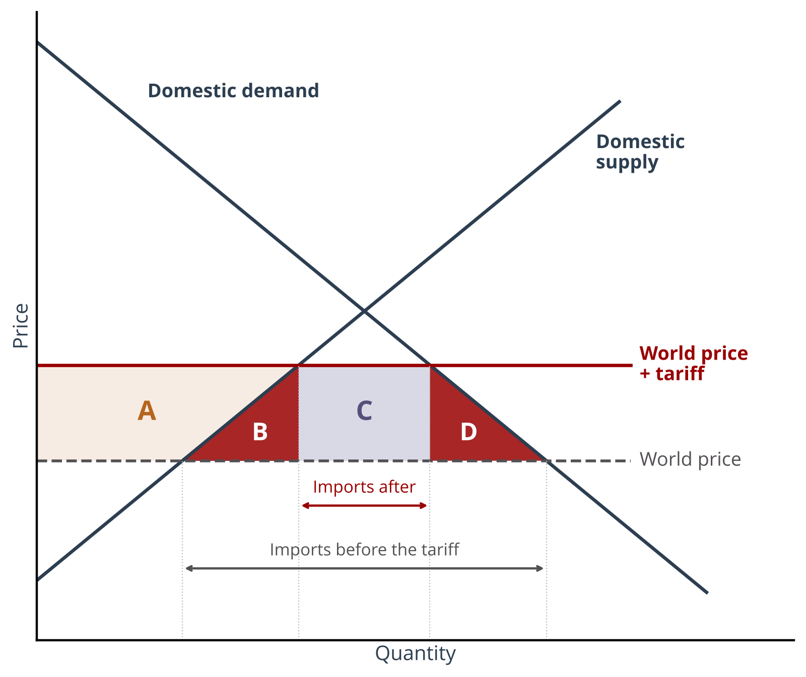
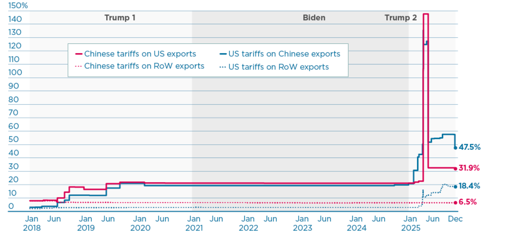
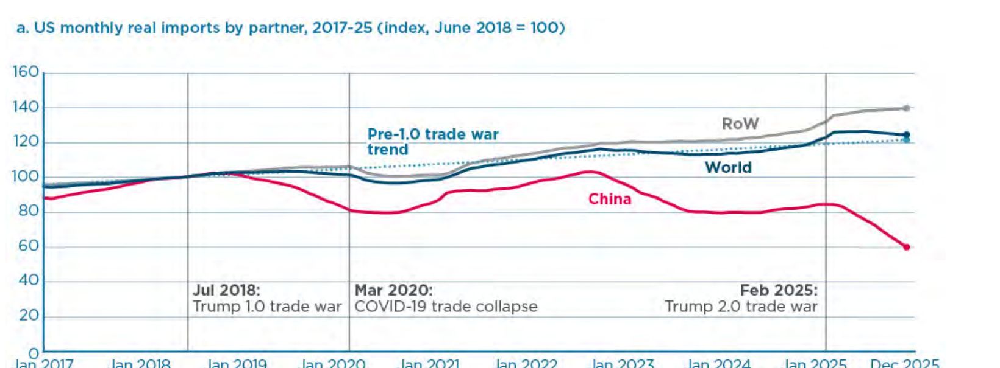
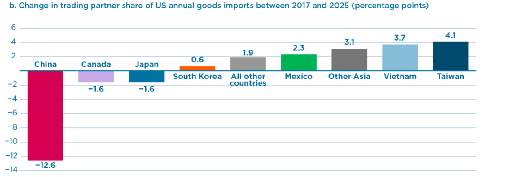
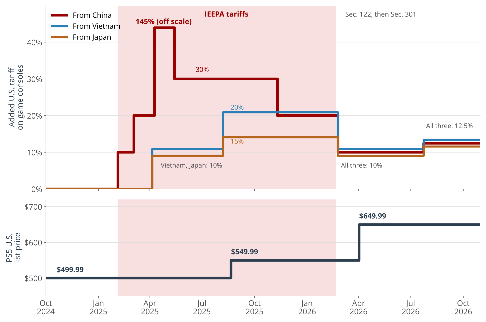
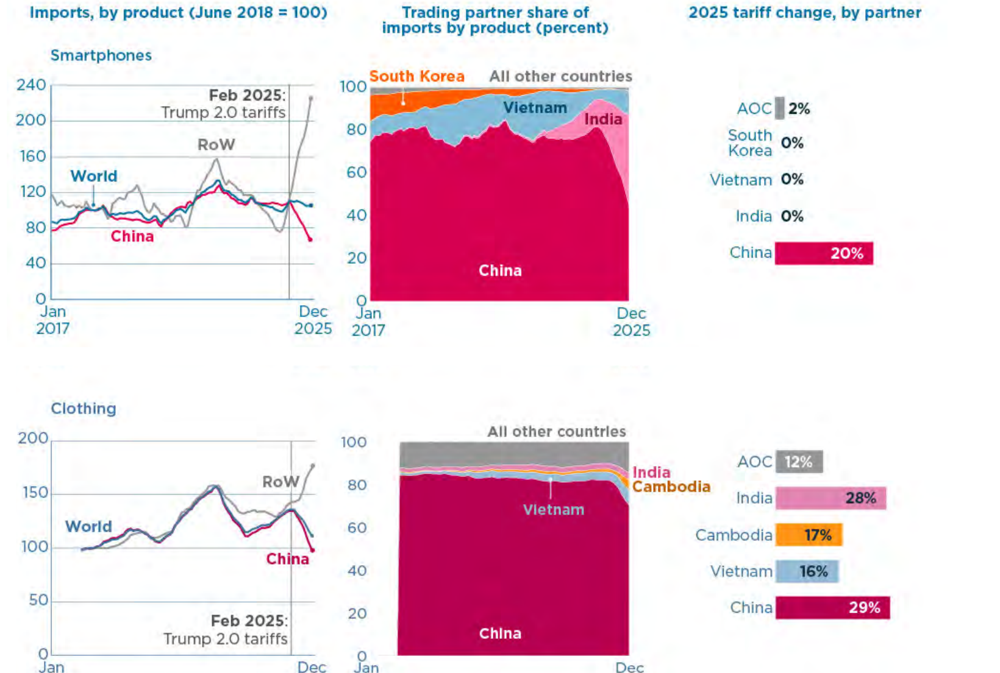
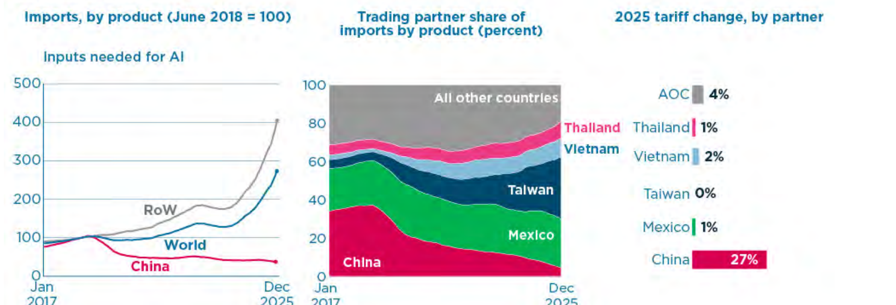
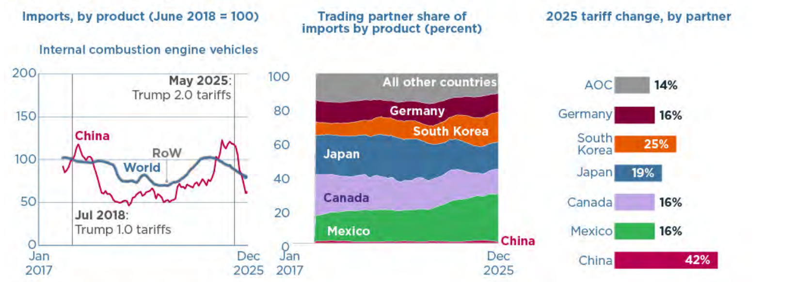

INTL-I103 | Day 20 — Tariffs & Global Supply Chains
November 2, 2026
Today’s Big Question
When can a government effectively use tariffs to push firms to restructure their supply chains, and at what costs?
| Section | What we’ll cover |
|---|---|
| 1 · MNEs Drive Trade | Revisiting stylized facts on trade and global supply chains |
| 2 · The economic case for trade | Why trade is welfare improving, and why a tariff creates deadweight loss |
| 3 · The Trump tariff trilemma | Leverage, industrial policy, or revenue: why a tariff cannot be all three at once |
| 4 · From Trump 1 to Liberation Day | What changed between the 2018–19 tariffs and the 2025 tariffs |
| 5 · What the tariffs did to supply chains | Bown (2026): what production shifted, what didn’t, and why |
| 6 · Who has power over supply chains? | Discussion: what governments can make firms do, what firms can resist, and when neither is in control |
“How Did Trump’s 2025 Trade War Affect the Decoupling of US-China Supply Chains?” Chad P. Bown, PIIE Working Paper 26-14, July 2026
Follow his work:
~80% of global trade runs through multinationals’ production networks
UNCTAD (2013), via Ruggie (2018)
49.5% of U.S. goods imports (2024) were related-party trade: firm to own affiliate
U.S. Census Bureau (2025), U.S. Goods Trade: Imports & Exports by Related Parties, 2024
44% of all U.S. goods trade (imports + exports, 2024) was related-party
U.S. Census Bureau (2025)
A tariff is not a tax on “foreign countries.” It is a tax on consumers and on transactions inside firms’ own supply chains, many of them shipments from one part of a firm to another.
Raw materials Steel, aluminum, copper; rare-earth magnets for motors and sensors
Where: global; China ~90% of rare earths and magnets
→
Components Tier 2–3: castings, wiring harnesses, chips
Where: Mexico, China, across Asia
→
Modules Tier 1: engines, transmissions, seats
Where: Mexico, Canada, Germany, Japan, Korea
→
Final assembly Lead firm (automaker)
Where: U.S., Mexico, Canada
Tariffed in 2025: steel, aluminum and copper (Section 232)
Tariffed since 2018: parts from China, 25% (Section 301)
Tariffed in 2025: auto parts from all countries (Section 232)
Tariffed in 2025: imported vehicles (Section 232)
A single component can cross the U.S.–Canada and U.S.–Mexico borders up to eight times before final assembly. Every crossing could create a tariff bill.
Sources: Bown (2026), pp. 6–8, 21–22, 28; Cato Institute, cited in eMarketer (2025), “Tariffs on Canada, Mexico could crash the US auto industry”
Assume car worth $10,000 ex-tariffs.
Each border crossing requires 25% tariff on the value of its product at that stage.
What does the finished car cost?
Stylized numbers. In current practice, vehicle supply chains in Mexico and Canada receive exemptions from the 2025 auto-parts tariff and compounding applies to inputs from outside of the USMCA.
| Stage | Value added | Value at the border | 25% tariff | Cost after the border |
|---|---|---|---|---|
| Raw materials | $1,000 | $1,000 | $250 | $1,250 |
| Components | $2,000 | $3,250 | $813 | $4,063 |
| Modules | $3,000 | $7,063 | $1,766 | $8,828 |
| Final assembly | $4,000 | $12,828 | $3,207 | $16,035 |
| Total | $10,000 | $6,035 | +60% |
Specialization
Countries gain by producing what they are relatively best at (comparative advantage)
Scale
Global markets spread fixed costs, lowering unit costs
Fragmentation
MNEs locate each production stage where it is cheapest (vertical FDI, Day 3)
The result is lower prices and more variety for consumers and firms.
But the gains are diffuse (spread across everyone who buys) and the losses are concentrated (on import-competing workers and firms).
If trade raises total income, a tariff must lower it. By how much? Who loses?

Tariff: a tax on imports, paid by the importer at the border
Multiple peer reviewed articles have found that the 2018-19 tariffs cost the U.S.economy between $7.2-16.8 billion per year and households between about $400-830 per year. These costs are relatively small/diffuse, so might be worth paying if the government has a clear policy objective. Note that 2018-19 tariffs were more targeted than 2025 tariffs.
Fajgelbaum, Goldberg, Kennedy & Khandelwal (2020); Amiti, Redding & Weinstein (2019)
Stated rationales:
Tariffs cannot achieve all three (or even two) at once.
On the motives: Bown (2026), p. 2; see also Bown & Irwin (2025), “The Incoherent Case for Tariffs,” Foreign Affairs
| Goal | What the administration said | What happened in 2025 |
|---|---|---|
| Leverage | Open foreign markets to U.S. exports | Country rates paused Apr. 9 for 90-day talks; most deals settled between 10% and the Liberation Day rate. China: 125%+ in April, cut after Geneva (May) and South Korea (Oct.) |
| Industrial policy | Reshore manufacturing. To Tim Cook: “We want you to build here.” | New Section 232 tariffs (steel, aluminum, autos, copper, lumber). But smartphones exempted twice; iPhone assembly moved to India |
| Revenue | Reduce the fiscal deficit | Imports from China −28%; IEEPA tariffs ruled illegal (Feb. 2026), replaced under other authorities |
Source: Bown (2026), pp. 2–3, 6–8, 15

Average U.S. tariff on China: 2018–19 3% → 21% · 2025 21% → 50%+ (125%+ in April)
Average U.S. tariff on everyone else: 2018–19 2% → 3% · 2025 3% → 18%
Source: Bown (2026), Figure 1 and pp. 5–8
| Trump 1 (2018–19) | Trump 2 (2025) | |
|---|---|---|
| Target | China (four product lists); steel, aluminum, solar panels, washers from all | China and everyone: all Chinese goods; country “Liberation Day” rates; sector tariffs |
| Legal authority | Section 301 (unfair trade practices); Section 232 (national security) | Mostly IEEPA (emergency powers) + Section 232; IEEPA tariffs ruled illegal, Feb. 2026 |
| What was spared | Consumer goods (phones, laptops): delayed “for Christmas season,” never tariffed | Shifting exemptions (Annex II), incl. smartphones |
| The message to firms | “Many Tariffed companies will be leaving China for Vietnam and other such countries in Asia.” (May 2019) | “I don’t want you building in India … We want you to build here.” (to Tim Cook, May 2025) |
Source: Bown (2026), pp. 2–8, 11
Trade diversion: sourcing shifts to untariffed suppliers
Decoupling: severing economic ties
De-risking: reducing critical dependencies while trade continues
Source: Bown (2026), Figure 2 and pp. 8–9



Sony moved assembly out of China, but cotninued reliance on parts plus tariff expansion to Vietnam and Japan mean its tariff exposure remains high
Sources: Bown (2026); Bloomberg (Dec. 2025); U.S. executive orders (2025); Global Trade Alert (2026); Sony (2025–26)
Smartphones
Clothing
Shifting requires an existing alternative and a large differential.
Source: Bown (2026), Figure 4 and pp. 12–16, 26

1 A growing denominator: the AI build-out

2 Shifts among the rest of the world

Source: Bown (2026), Figure 5 and pp. 17–23
What the USG can do
What firms can do
When neither is in control
Sources: Bown (2026), pp. 2–3, 15–16, 28; AFP, “Apple to hike investment in US to $600 bn over four years” (Aug. 7, 2025); NPR, “Trump says Nvidia will hand the U.S. 15% of its H20 chip sales to China” (Aug. 11, 2025); Friedman et al. (2024), p. 9
Wednesday: Apple’s Supply Chains: De-Risk or Double-Down on China? The case ends in early 2024; think about how Liberation Day tariffs relate.
INTL-I103 | Global Business